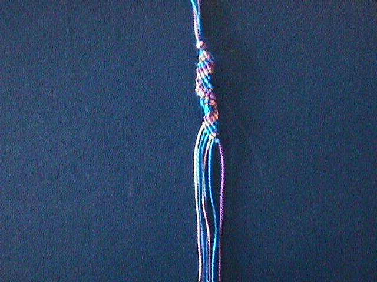

VÄNSKAPVänskapsband På 1800-talet gav männen friargåvor till de dem ville gifta sig med tillexempel, flätade band. Nu för tiden ger man istället vänskapsband till sina kompisar. DIKTER Tro inte du hör Döm inte allt du ser Säg inte allt du vet Lyckan kommer, lyckan går lycklig den som lyckan får. Behandla andra så som du vill bli behandlad själv. Sanna vänner är som diamanter, sällsynta och dyrbara. Där alla tänker lika tänker ingen särskilt mycket. Det finns ett ord, ej mycket använt på vår jord, det lilla ordet lindrar smärta, stillar gråt, det lilla ordet är förlåt. Det finns en blomma, vit som snö, kan ej vissna, kan ej dö, den blomman känner du nog igen, trofast vänskap heter den. På stigar går man aldrig riktigt ensam. Fötterna har sällskap med andra fötter som stigit stigen fram. A ring is round and has no end, and that's so long I'll be your friend. INTERVJUER Frågor. 1. Hur ska en bra kompis vara? 2. Vad ska man göra om man blir osams? 3. Är det viktigt att ha kompisar? 4. Hur gör man för att få vara med och leka/hitta nya kompisar? 5. Vad är vänskap? Pojke, 12 år svarar: 1. Snäll, rolig, den ska vara sig själv när man är med den. 2. Säga förlåt, försöka bli sams. 3. Ja. 4. Vara snäll. Låta någon vara med, så får man kanske va med någon annan. 5. Snällhet, schyssthet…lite såna saker. Flicka, 14 år svarar: 1. Snäll, man ska kunna lita på den. 2. Man skiter i att man blivit osams, är med kompisen, så blir man sams efter ett tag. 3. Det beror på vad det är för sorts kompis. Men det är viktigt om det är en riktig kompis. 4. "Hej, får jag vara med och leka?" 5. Ett förtroende mellan två individer. Flicka, 19 år svarar: 1. Snäll, nån man kan lita på, nån man inte blir ledsen när den är dum mot än, en som tröstar när man är lite nere och nån som man vet alltid finns för än. 2. Beror på hur osams, antagligen tjurar man lite tills det löser sig av sig själv och man förstår hur fånig man var (om man var det). Om man är jätte osams och bråkar får man lösa det på ett annat sätt, typ prata med varandra. 3. Ja. 4. Vet inte. 5. Vänskap är när man litar på någon så mycket att man inte är rädd för den. Kvinna, 42 år svarar:v 1. Den ska veta vad man känner. Se på en om det är något fel. Den ska vara intresserad och bry sig om en. 2. Vänta tills det går över. 3. Ja. 4. Ta kontakt. 5. Hänsyn, bry sig om, försöka förstå, att ha kul. Man, 43 år svarar: 1. En man kan lita på, som alltid ställer upp och inte sviker när det gäller. 2. Försöka bli sams. 3. Ja. 4. Visa att man är intresserad. 5. Att ha någon att ty sig till. Kvinna, 47 år. 1. Pålitlig, rolig att umgås med, någorlunda gemensamma intressen. 2. Försöka reda upp det genom att prata om det. 3. Ja. För att må bra och ha någon att prata med. 4. På jobbet, gå på en kurs, prata med grannar. Man får vara lite öppen själv. 5. Att kunna vara sig själv, och kunna prata om vad som helst. Man, 49 år svarar: 1. Rolig, någon man trivs bra ihop med, generös, man ska kunna lite på vännen och den ska vara snäll. 2. Prata. Men det är bra att skrika ibland också; vädra känslorna. 3. Ja. Mänsklig kontakt är alltid viktigt och att ha någon att dela saker med. 4. Bara vara sig själv, så hittar man en kompis som man trivs med så småningom. 5. Omtanke om någon. |
 |